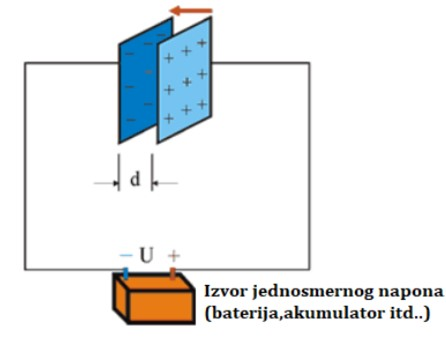

Кондензатор је електротехнички елемент који може да сачува енергију у облику електричног поља. Кондензатор се састоји од две металне плоче (најчешће израђене од алуминијума) одвојене изолатором (диалектрик). Изолатор (диалектрик) је неки материјал који пружа отпор у пролазу слободних електрона(вакум, ваздух, гума,стакло, керамика). Највише се користи у разним филтерима, осцилаторима, када је потребно исправљање напона.

У зависности од материјала од ког је диалекетрик направљен, блок кондензаторе делимо на:
| Provodna ploca | Slovna oznaka za provodnik ploce | Dialektrik | Slovna oznaka za dialektrik |
|---|---|---|---|
| AL - Folija | K | Polistirol | S |
| Naporeni AL | NK | Polikarbonat | C |
| Samoizmenljiv | MK | Politerefalat | T |
Creator: Marko Kocic